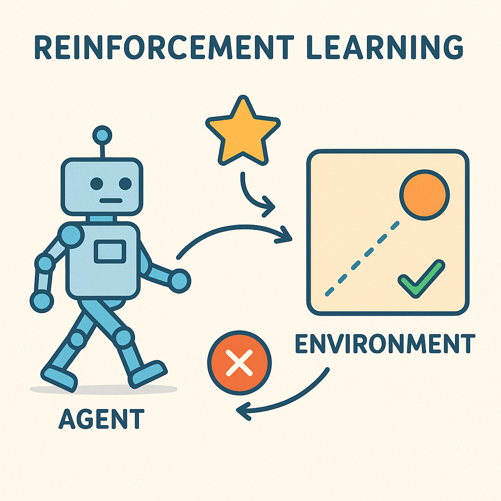

Complete Guide to Reinforcement Learning

Introduction
Reinforcement Learning (RL) is a paradigm of machine learning where an agent learns to make decisions by interacting with an environment to maximize cumulative rewards. Unlike supervised learning, where the correct answers are provided, or unsupervised learning, where patterns are discovered in data, reinforcement learning involves learning through trial and error based on feedback from the environment.
The inspiration for RL comes from behavioral psychology and how animals learn through rewards and punishments. This approach has proven remarkably effective for complex decision-making problems where the optimal strategy isn’t immediately apparent.
Core Concepts
Agent and Environment
The fundamental setup of RL involves two main components:
Agent: The learner or decision-maker that takes actions in the environment. The agent’s goal is to learn a policy that maximizes expected cumulative reward.
Environment: Everything the agent interacts with. It receives actions from the agent and returns observations (states) and rewards.
Key Elements
State (S): A representation of the current situation in the environment. States can be fully observable (agent sees complete state) or partially observable (agent has limited information).
Action (A): Choices available to the agent at any given state. Actions can be discrete (finite set of options) or continuous (infinite possibilities within a range).
Reward (R): Numerical feedback from the environment indicating the immediate value of the agent’s action. Rewards can be sparse (only at terminal states) or dense (at every step).
Policy (π): The agent’s strategy for choosing actions given states. Can be deterministic (always same action for same state) or stochastic (probability distribution over actions).
Value Function: Estimates the expected cumulative reward from a given state or state-action pair under a particular policy.
The RL Loop
- Agent observes current state
- Agent selects action based on current policy
- Environment transitions to new state
- Environment provides reward signal
- Agent updates its knowledge/policy
- Process repeats
Exploration vs Exploitation
One of the central challenges in RL is balancing exploration (trying new actions to discover better strategies) with exploitation (using current knowledge to maximize immediate reward). This tradeoff is crucial because:
- Pure exploitation may miss better long-term strategies
- Pure exploration wastes opportunities to use known good strategies
- The optimal balance depends on the problem and learning phase
Mathematical Foundations
Markov Decision Process (MDP)
Most RL problems are formalized as MDPs, defined by the tuple (S, A, P, R, γ):
- S: Set of states
- A: Set of actions
- P: State transition probabilities P(s’|s,a)
- R: Reward function R(s,a,s’)
- γ: Discount factor (0 ≤ γ ≤ 1)
The Markov property states that the future depends only on the current state, not the history of how we arrived there.
Bellman Equations
The Bellman equations provide the foundation for many RL algorithms:
State Value Function: \[ V^π(s) = \mathbb{E}[R_{t+1} + γV^π(S_{t+1}) | S_t = s] \]
Action Value Function (Q-function): \[ Q^π(s,a) = \mathbb{E}[R_{t+1} + γQ^π(S_{t+1}, A_{t+1}) | S_t = s, A_t = a] \]
Optimal Bellman Equations: \[ V^*(s) = \max_a \sum_{s'} P(s'|s,a)[R(s,a,s') + γV^*(s')] \]
\[ Q^*(s,a) = \sum_{s'} P(s'|s,a)[R(s,a,s') + γ \max_{a'} Q^*(s',a')] \]
Convergence and Optimality
Under certain conditions (finite state/action spaces, proper discount factor), RL algorithms are guaranteed to converge to optimal policies. The policy improvement theorem provides theoretical backing for iterative policy improvement methods.
Key Algorithms
Model-Based Methods
Dynamic Programming
- Policy Iteration: Alternates between policy evaluation and policy improvement
- Value Iteration: Directly computes optimal value function, then derives policy
- Requires complete knowledge of environment dynamics
- Guaranteed convergence but computationally expensive for large state spaces
Model-Free Methods
Temporal Difference Learning
- Q-Learning: Off-policy method that learns optimal action values
- Update rule: \(Q(s,a) \leftarrow Q(s,a) + α[r + γ \max_{a'} Q(s',a') - Q(s,a)]\)
- Explores using ε-greedy or other exploration strategies
- Proven to converge to optimal Q-function
- SARSA (State-Action-Reward-State-Action): On-policy method
- Update rule: \(Q(s,a) \leftarrow Q(s,a) + α[r + γ Q(s',a') - Q(s,a)]\)
- Uses actual next action taken by current policy
- More conservative than Q-learning
Policy Gradient Methods
- Directly optimize policy parameters using gradient ascent
- REINFORCE: Basic policy gradient algorithm using Monte Carlo returns
- Actor-Critic: Combines value function estimation with policy optimization
- Actor: Updates policy parameters
- Critic: Estimates value function to reduce variance
- Better for continuous action spaces and stochastic policies
Monte Carlo Methods
- Learn from complete episodes
- No bootstrapping (unlike TD methods)
- High variance but unbiased estimates
- Suitable when episodes are short and environment is episodic
Deep Reinforcement Learning
Deep Q-Networks (DQN)
Combines Q-learning with deep neural networks to handle high-dimensional state spaces:
Key Innovations:
- Experience Replay: Store and randomly sample past experiences to break correlation
- Target Network: Use separate network for computing targets to stabilize learning
- Function Approximation: Neural networks approximate Q-values for large state spaces
Improvements:
- Double DQN: Addresses overestimation bias in Q-learning
- Dueling DQN: Separates state value and advantage estimation
- Prioritized Experience Replay: Sample important experiences more frequently
- Rainbow DQN: Combines multiple improvements for state-of-the-art performance
Policy Gradient Methods
Proximal Policy Optimization (PPO)
- Clips policy updates to prevent destructive large changes
- Simpler and more stable than other policy gradient methods
- Widely used in practice due to reliability
Trust Region Policy Optimization (TRPO)
- Constrains policy updates within trust region
- Provides theoretical guarantees on policy improvement
- More complex than PPO but stronger theoretical foundation
Actor-Critic Methods
- A3C (Asynchronous Actor-Critic): Parallel training with multiple agents
- A2C (Advantage Actor-Critic): Synchronous version of A3C
- SAC (Soft Actor-Critic): Off-policy method with entropy regularization
Deep Deterministic Policy Gradient (DDPG)
- Extends DQN to continuous action spaces
- Uses actor-critic architecture with deterministic policies
- Employs target networks and experience replay like DQN
Advanced Topics
Multi-Agent Reinforcement Learning (MARL)
When multiple agents interact in the same environment:
- Cooperative: Agents share common goal
- Competitive: Zero-sum or adversarial setting
- Mixed-Motive: Combination of cooperation and competition
Challenges include non-stationarity (other agents are learning too), credit assignment, and communication.
Hierarchical Reinforcement Learning
Structures learning across multiple temporal scales:
- Options Framework: Semi-Markov decision processes with temporal abstractions
- Feudal Networks: Hierarchical structure with managers and workers
- HAM (Hierarchy of Abstract Machines): Formal framework for hierarchical policies
Benefits include faster learning, better exploration, and transferable skills.
Transfer Learning and Meta-Learning
- Transfer Learning: Apply knowledge from one task to related tasks
- Meta-Learning: Learn how to learn quickly on new tasks
- Few-Shot Learning: Quickly adapt to new tasks with minimal data
Partial Observability
When agents can’t observe complete state:
- POMDPs (Partially Observable MDPs): Formal framework with belief states
- Recurrent Networks: Use memory to maintain state estimates
- Attention Mechanisms: Focus on relevant parts of observation history
Safety and Robustness
Critical considerations for real-world deployment:
- Safe Exploration: Avoid dangerous actions during learning
- Robust RL: Handle uncertainty and distribution shift
- Constrained RL: Satisfy safety constraints while optimizing rewards
- Interpretability: Understanding agent decision-making process
Applications
Game Playing
- Board Games: Chess (Deep Blue), Go (AlphaGo, AlphaZero)
- Video Games: Atari games (DQN), StarCraft II (AlphaStar), Dota 2 (OpenAI Five)
- Card Games: Poker (Libratus, Pluribus)
Robotics
- Manipulation: Grasping, assembly, dexterous manipulation
- Navigation: Path planning, obstacle avoidance, SLAM
- Locomotion: Walking, running, jumping for legged robots
- Human-Robot Interaction: Social robots, collaborative robots
Autonomous Systems
- Self-Driving Cars: Path planning, decision making in traffic
- Drones: Navigation, surveillance, delivery
- Traffic Management: Optimizing traffic flow, signal control
Finance and Trading
- Algorithmic Trading: Portfolio management, execution strategies
- Risk Management: Dynamic hedging, capital allocation
- Market Making: Optimal bid-ask spread management
Healthcare
- Treatment Planning: Personalized therapy recommendations
- Drug Discovery: Molecular design, clinical trial optimization
- Medical Imaging: Automated diagnosis, treatment planning
Natural Language Processing
- Dialogue Systems: Conversational AI, customer service bots
- Machine Translation: Optimizing translation quality
- Text Generation: Content creation, summarization
Resource Management
- Cloud Computing: Resource allocation, auto-scaling
- Energy Systems: Smart grid management, battery optimization
- Supply Chain: Inventory management, logistics optimization
Implementation Considerations
Environment Design
- Reward Engineering: Design rewards that incentivize desired behavior
- State Representation: Choose appropriate features and observations
- Action Space: Balance expressiveness with computational complexity
- Simulation Fidelity: Trade-off between realism and computational speed
Hyperparameter Tuning
Critical parameters affecting performance:
- Learning Rate: Too high causes instability, too low slows convergence
- Exploration Rate: Balance exploration and exploitation
- Discount Factor: Determines importance of future rewards
- Network Architecture: Layer sizes, activation functions, regularization
- Batch Size: Affects stability and computational efficiency
Evaluation and Testing
- Sample Efficiency: How much data needed to learn effective policy
- Final Performance: Quality of learned policy on test environments
- Robustness: Performance under distribution shift or adversarial conditions
- Safety: Avoiding dangerous or harmful actions
Debugging RL Systems
Common issues and solutions:
- Learning Instability: Use target networks, gradient clipping, proper initialization
- Poor Exploration: Adjust exploration strategies, use curiosity-driven methods
- Reward Hacking: Careful reward design, use auxiliary objectives
- Overfitting: Regularization, diverse training environments
Computational Considerations
- Parallel Training: Distributed computing, asynchronous updates
- Memory Requirements: Experience replay buffers, model storage
- Training Time: Sample efficiency vs wall-clock time trade-offs
- Hardware: GPUs for neural networks, CPUs for environment simulation
Resources and Tools
Frameworks and Libraries
- Stable-Baselines3: High-quality implementations of RL algorithms
- Ray RLlib: Scalable reinforcement learning library
- OpenAI Gym: Standard environment interface for RL research
- PyBullet: Physics simulation for robotics applications
- Unity ML-Agents: RL framework for Unity game engine
- TensorFlow Agents: RL library built on TensorFlow
- Dopamine: Research framework for fast prototyping
Simulation Environments
- Atari: Classic video games for testing RL algorithms
- MuJoCo: Physics simulation for continuous control
- CarRacing: Autonomous driving simulation
- Roboschool: Open-source physics simulation
- StarCraft II Learning Environment: Real-time strategy game
- Procgen: Procedurally generated environments for generalization
Books and Courses
- “Reinforcement Learning: An Introduction” by Sutton & Barto
- “Deep Reinforcement Learning” by Aske Plaat
- CS294 Deep Reinforcement Learning (UC Berkeley)
- DeepMind & UCL Reinforcement Learning Course
- OpenAI Spinning Up in Deep RL
Research Venues
- Conferences: ICML, NeurIPS, ICLR, AAAI, IJCAI
- Journals: JMLR, Machine Learning, Artificial Intelligence
- Workshops: Deep RL Workshop, Multi-Agent RL Workshop
Best Practices
- Start Simple: Begin with basic algorithms before moving to complex methods
- Understand the Environment: Analyze state/action spaces and reward structure
- Baseline Comparison: Compare against random and heuristic policies
- Ablation Studies: Test individual components to understand their contribution
- Reproducibility: Use seeds, version control, and detailed logging
- Incremental Development: Add complexity gradually while maintaining functionality
- Monitor Training: Track learning curves, exploration metrics, and environment statistics
Conclusion
Reinforcement learning represents a powerful paradigm for solving complex sequential decision-making problems. While it presents unique challenges in terms of sample efficiency, exploration, and stability, the field continues to advance rapidly with new algorithms, applications, and theoretical insights. Success in RL requires careful consideration of problem formulation, algorithm selection, implementation details, and thorough evaluation practices.